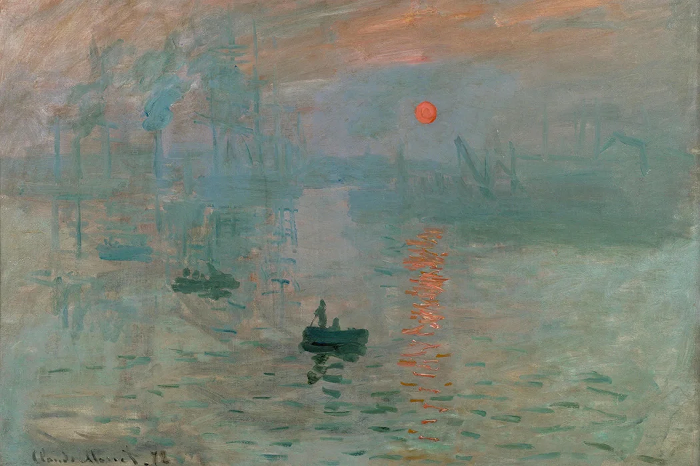
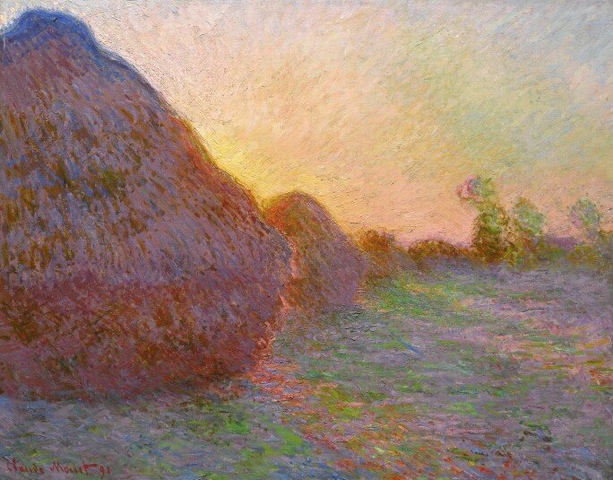
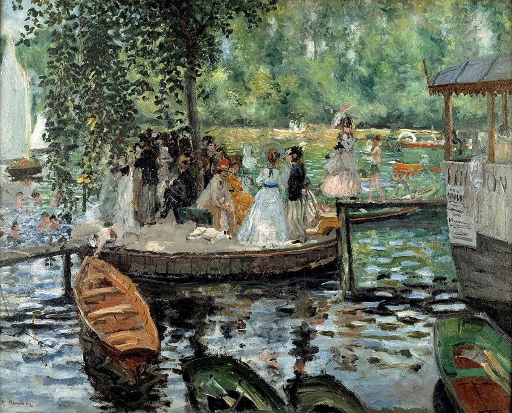
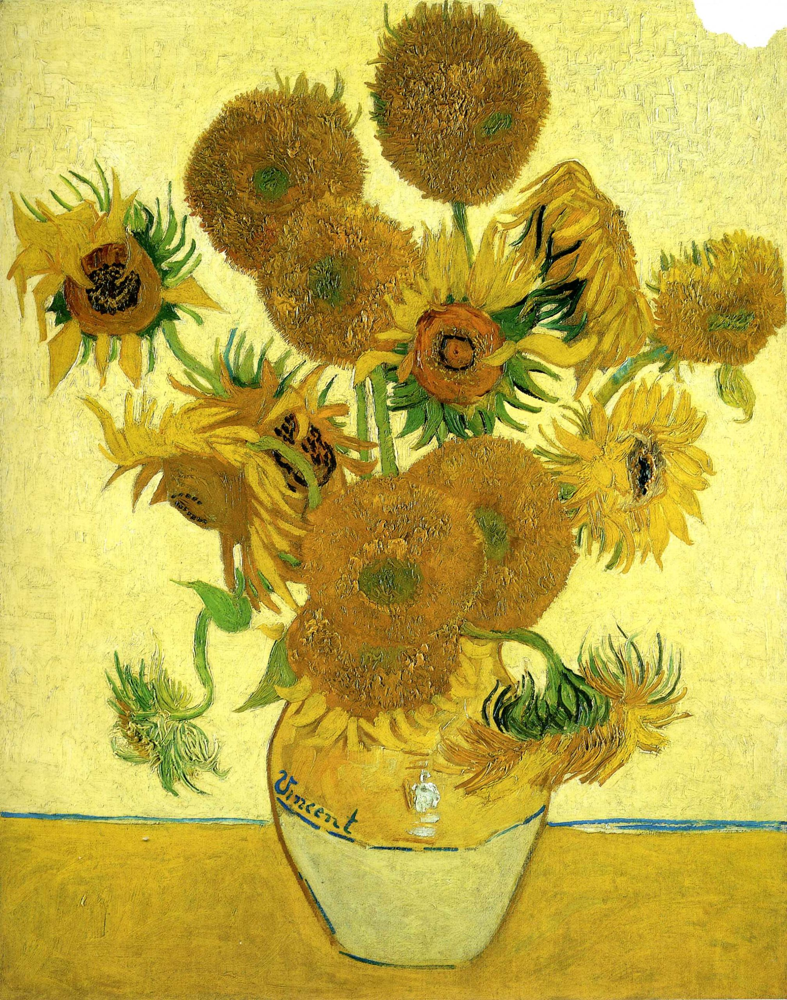

Impressionism
Impressionism developed in France in the nineteenth century and is based on the practice of painting out of doors and spontaneously 'on the spot' rather than in a studio from sketches. Main impressionist subjects were landscapes and scenes of everyday life.




Instead of painting in a studio, the impressionists found that they could capture the momentary and transient effects of sunlight by working quickly, in front of their subjects, in the open air (en plein air) rather than in a studio. This resulted in a greater awareness of light and colour and the shifting pattern of the natural scene. Brushwork became rapid and broken into separate dabs in order to render the fleeting quality of light.
continue your journey:
part eight
Simple Div Link
Learn more about Impressionism here